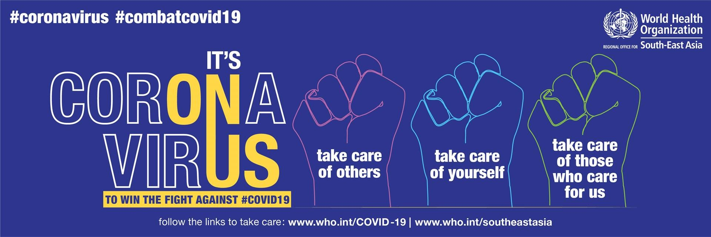
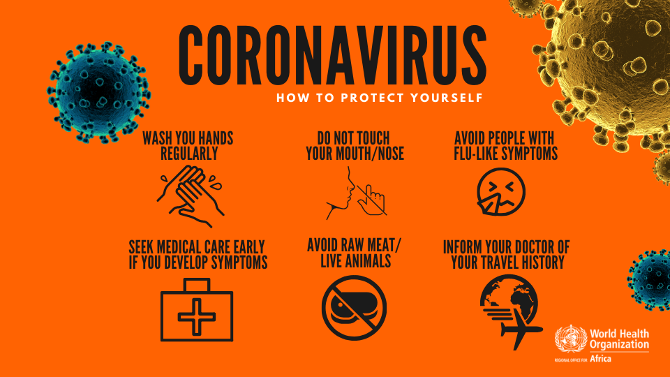

NEW WAYS
 We are committed to the highest standards for the safety of our valued community and guests. While in the Centre please practice self- distancing and remain 6 feet away from others and as mandated by the Northern BC health Authority on November 19th, 2020 please wear a non-surgical face mask when entering Pine Centre Mall. Thank you for keeping our community safe. In anticipation to your visit to Pine Centre please see below the temporary adjustments we have made to the Centre in conjunction with physical distancing measures:
Temporary Closures:
- Children’s Play Area
- Strollers, wheel chairs and scooter rentals are temporarily unavailable
- Massage Chairs, Candy vending machines, toy vending machines and kiddie rides are temporarily unavailable
Hand sanitizer Curb Side Pick Up available at every entrance and corridor available for some retailers. Food court seating is limited and available only to those enjoying Foodcourt purchased food and beverages. Please be courteous to others and restrict your time in the Foodcourt to 20 minutes in order to provide seating for those who would like to eat in the food court.
Curb Side Pick Up
Pine Centre is now offering Curbside Pick-Up in partnership with participating retailers.
- The Source is offering this to their customers. Head to thesource.ca to utilize their Curb Side Pick Up program
- Select the retailer you would like to shop at and contact the individual store by phone or online to confirm operating hours, the availability of the desired merchandise, and the payment options to complete your purchase.
- When your order is ready, the retailer will notify you of the date, time for pick up and designated location.
- For pickup please proceed to the designated curbside pickup area and call the store to confirm your arrival. A store employee will deliver a contactless purchase to your vehicle
Pick up time is available between Monday and Saturday 11 AM to 5 PM and Sunday 11 AM - 5 PM
To further protect your safety, and in compliance with the province’s directive, all participating Pine Centre retailers have been instructed that their employees must comply with health and safety regulations.